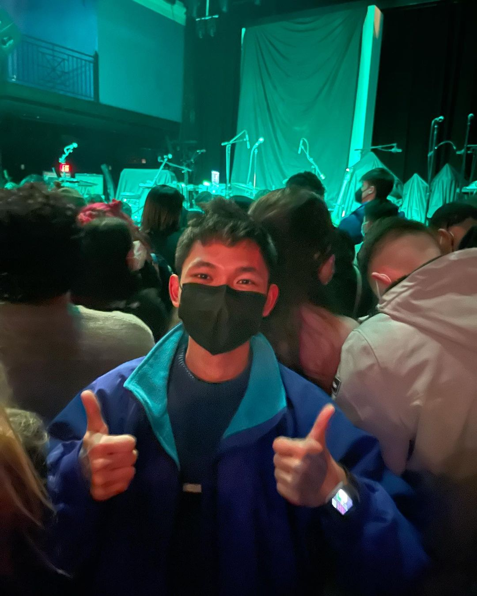

My name is Nathan Tablang and I am currently a
Sophomore at University of Maryland, College Park.
When I was younger, I used to right-click a webpage and pressing "inspect element" not knowing of what it really meant; I just simply liked how I could change the apperance and doing some fun stuff with it. Long before I knew, I self studied Web Development under The Odin Project and it propelled me to study Computer Science with a specialization in Machine Learning at my university.
If I'm not sipping Matcha these days, I have had the solemn gratitude of learning algorithms, computer assembly, machine learning, and of course, making creative websites for the enrichment of the soul. :)
Here are some tech stacks I have been using in my work:
When I was younger, I used to right-click a webpage and pressing "inspect element" not knowing of what it really meant; I just simply liked how I could change the apperance and doing some fun stuff with it. Long before I knew, I self studied Web Development under The Odin Project and it propelled me to study Computer Science with a specialization in Machine Learning at my university.
If I'm not sipping Matcha these days, I have had the solemn gratitude of learning algorithms, computer assembly, machine learning, and of course, making creative websites for the enrichment of the soul. :)
Here are some tech stacks I have been using in my work:
- HTML
- CSS
- JavaScript (ES6)
- React
- Sass
- Node.js
- Next.js
- Tailwind CSS
- Firebase Auth
- d3.js
- Java
- C
- UNIX/LINUX
- MongoDB
- The Maven Build System
